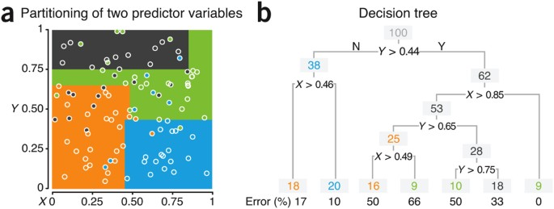
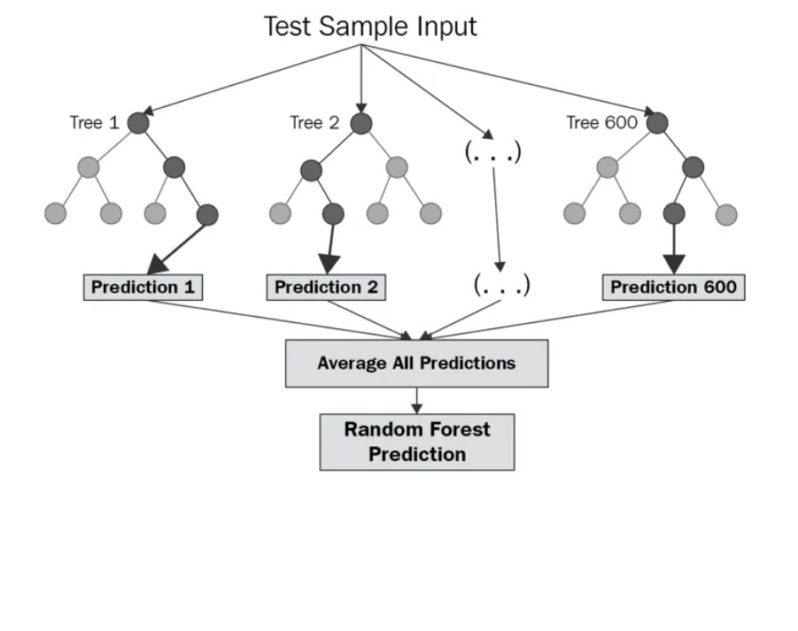
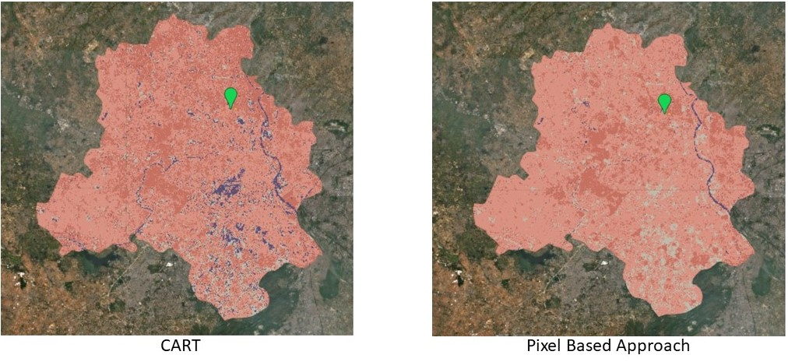

8 WeekSix: Classification
8.1 Summary
Recapping from last week, Google Earth Engine (GEE) offers rapid handling of vast volumes of data, providing a systematic and computer-controlled environment for processing, classification, accuracy improvement, etc., for pixel imagery data. In remote sensing (RS) cloud computation, the classification of pixel imagery data occurs in two main ways: supervised and unsupervised. Supervised classification requires significant control and input details regarding the classification of pixel data, relying on outputs from pattern recognition or machine learning. The classifier learns patterns in the data and uses them to assign labels to new data. This pattern vector is then used by analysts to classify the image. On the other hand, unsupervised classification involves minimal interference, particularly in cases where land cover classes are not known beforehand. It requests the computer to cluster the data based on information such as bands and then label the clusters accordingly. Machine learning-based classification, which focuses on pattern recognition for thematic information extraction, is also referred to as intuitive learning.
In remote sensing, digital image processing also employs information extraction using artificial intelligence (AI) techniques such as expert systems, support vector machines, and random forest classifiers. Finally, the error matrix is used to derive thematic map accuracy assessments using GEE in RS. As urban spatial science professionals, it is crucial to understand the underlying requirements of geospatial cloud computation, enabling us to be aware and critical of its processes and applications in future endeavors.
8.1.1 Classification and Regression Tree (CART)
Understanding that “Regression” is also a machine learning (ML) method involves finding a line of best fit between the dependent and independent variables. Classification and Regression Trees (CART) prove to be useful tools for classifying (classification tree) and predicting (regression tree) pixel imagery data (see figure-1). A classification tree is valuable for pattern recognition in discrete categories of datasets such as temperature, rainfall, wind, and saturation, whereas a regression tree is utilized for continuous dependent variables like GCSE scores. However, when linear regression doesn’t fit well, sub-setting the data into smaller chunks using decision trees (with root, branch, and leaves) becomes feasible, a process known as regression tree.
These decision trees may delve deeper, with a criterion like Gini impurity used to find the lowest impurity, which wins. Moreover, for numerical value interests, the sections are divided based on thresholds (nodes), and the sum of squared residuals (SSR) is calculated to assess SSR for different thresholds. Setting a minimum number of observations is necessary to prevent overfitting, and starting with the root of the tree with the lowest SSR is recommended. The process is then repeated across all variables (as the root), yielding a numeric value unlike categories in classification trees.
To avoid overfitting, the best model should exhibit low bias and low variability (e.g., test and train). This can be achieved by limiting the growth of the tree (e.g., setting a minimum number of pixels in a leaf, often 20) or by pruning, which involves identifying the weakest link. The challenge of decision trees with new data underscores the appropriateness of using the random forest method.
Figure-1: Classification and Regression Tree (CART)
8.1.2 Random Forest
Random forest (see figure-2) employs the principle that having multiple decision trees is often better than just one. In this method, the concept of bootstrap sampling is implemented, where data is resampled with replacement to make decisions, a process known as “bagging.” Approximately 70% of the training data is utilized in the bootstrap, while the remaining 30% constitutes out-of-bag (OOB) samples, serving as the testing data. This process is repeated for each tree, with each one being trained on a different set of OOB samples. Notably, no pruning is required in random forests, as the majority voting mechanism determines the final decision. Lastly, the proportion of OOB samples that are incorrectly classified constitutes the out-of-bag error (OOBE). However, a challenge arises with the validation data, which differs from the OOB data and is never included in the decision trees.
Figure-2 Random Forest Analysis

8.1.3 Working with Imagery
Insights into the know-how of supervised and unsupervised classification of pixel data in remote sensing (RS) are crucial for understanding their application on imagery. As machine learning has progressed, there are both generic machine learning algorithms and those specific to remote sensing.
In supervised classification, pixels are not treated in isolation but rather in context with neighboring pixels and objects (polygons), considering factors such as texture. Unsupervised classification operates through clustering algorithms like k-means and DBSCAN. The iterative self-organizing data analysis technique (ISODATA) algorithm, used for multispectral pattern recognition, performs cluster busting.
Furthermore, common algorithms learned include decision trees, random forests, maximum likelihood, and support vector machines (SVMs), all significant in supervised classification. Maximum likelihood is a traditional classifier where prior probability information, such as 60% urban, is specified for the data (land cover) likely to have certain values in the pixel. SVM, on the other hand, sets a hyperplane between the maximum margin classifier and support vectors, often employing 3D planes to support more than two datasets.
Figure-3: CART and Pixel Approach for Delhi, India

8.2 Application
he research conducted by (Chen et al. 2017) involved a comparative assessment of logistic model tree, random forest, and classification and regression tree models for spatial prediction of landslide susceptibility. They found that the random forest model showed promising application with a success rate of 0.837 and a prediction rate of 0.781, outperforming CART in landslide susceptibility mapping in Long County, Georgia. However, a study by the team of (Mohajane et al. 2021) also found that RF (RF-FR) achieved the highest performance (AUC = 0.989), surpassing other methods. Interestingly, they established SVM (AUC = 0.959) to be the next supportive model after RF, performing better than CART (AUC = 0.847) in forecasting forest fires.
In the former study, the linear-support vector machine algorithm (L-SVM) was applied to evaluate the predictive capability of 12 landslide conditioning factors. In contrast, the latter research developed the Frequency Ratio-Support Vector Machine (FR-SVM) model, one of the hybrid machine learning algorithms, to compare with four others: Frequency Ratio-Multilayer Perceptron (FR-MLP), Frequency Ratio-Logistic Regression (FR-LR), Frequency Ratio-Classification and Regression Tree (FR-CART), and Frequency Ratio-Random Forest (FR-RF), for mapping forest fire susceptibility in the north of Morocco.
The first study considered twelve landslide-related parameters, including slope angle, slope aspect, plan curvature, profile curvature, altitude, NDVI, land use, distance to faults, distance to roads, distance to rivers, lithology, and rainfall. On the other hand, the second study used ten independent causal factors, including elevation, slope, aspect, distance to roads, distance to residential areas, land use, normalized difference vegetation index (NDVI), rainfall, temperature, and wind speed.
8.3 Reflection
Although the lecture was long, it was definitely worth the effort to learn about the fascinating processes behind GEE application in RS. I particularly appreciated the opening part where the supervised classification of CART and random forest method was discussed, highlighting how machine learning drives pixel imagery processing in an intuitive manner similar to human learning.
Previously intimidating terms like Machine Learning, Cloud Computing, and Deep Learning now seem like exciting avenues for learning, exploration, and application. It was reassuring to hear from the professor that there are only a few lines of code needed to perform tasks that would otherwise take numerous slides of lecture material.
Moreover, relating the concepts covered in the lecture to those learned in CASA0005, such as linear regression, best line-fit, residual assumption, clustering, k-means, and DBSCAN, helped solidify my understanding. Despite initially feeling apprehensive about not being as practiced in GIS concepts or R-studio, everything began to fall into place as the lecture progressed.
As we delve deeper into pixel imagery data processing, I’m intrigued by the upcoming discussion on the identification and processing of hard or soft surfaces and the choice between pixel or object methods. It’s exciting to see what else we’ll uncover in the sessions to come!